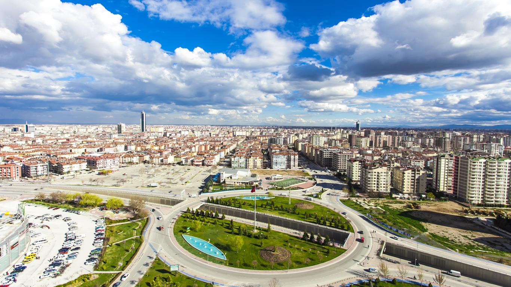

783 bin kilometrekarelik büyüklüğe sahip Türkiye’de 81 il mevcut. 81 ilimizden her birisini çeşitli büyüklüklere sahip illerimiz oluşturuyor. Peki ya en büyük yüzölçümüne sahip illerimiz hangileri ? İşte Türkiye’nin yüzölçümüne göre en büyük 3 ili:
Konya, Türkiye'nin yüzölçümü bakımından en büyük ili ve en kalabalık altıncı şehridir. 31 ilçeden oluşur. Konya il nüfusu 2021 yılında 2.277.017'ydi, trafik plaka numarası 42'dir. 1875'te kurulan Konya Belediyesi, 1987'de çıkarılan 3399 sayılı yasa gereğince "büyükşehir" statüsüne kavuşmuş olup 1989'dan beri belediye hizmetleri bu statüye göre yürütülmektedir. 2014'te 6360 sayılı kanun ile büyükşehir belediyesinin sınırları il mülki sınırları oldu.
Yukarı'da da belirttiğimiz gibi Konya 31 ilçeden oluşur. Konya ili Türkiye'nin en büyük ili olmakla beraber büyük ilçelere sahiptir. İşte Konya'nın en büyük 3 ilçesi:
Konya hakkında detaylı bilgi için tıklayınız...
Sivas, Türkiye'nin İç Anadolu Bölgesinde yer alan bir ilidir. Sivas ili, Mezopotamya ve arasında kervanların geçtiği bölgede olduğu için, Selçuklu Hanedanı döneminde tüccarların ziyaret ettiği bir merkez haline gelmiştir. Türkiye'de Konya'dan sonra en çok Selçuklu eserinin bulunduğu il Sivas'tır. 13. yüzyıla ait Gök Medrese, Çifte Minareli Medrese ve Mavi Medreseleri çini sanatı açısından mutlaka görülmeye değer yerlerdir. Ulu Camii ise 1100 yılında inşa edilmiştir. Ayrıca Sivas, Türkiye'nin yüzölçümü açısından en büyük ikinci ilidir. 2020 sonu TÜİK verilerine göre İl nüfusu: 635.889, merkez nüfusu: 382.520'dir.
Sivas'ın 17 tane ilçeden oluşur. Sivas'ın en büyük 3 ilçesi şunlardır:
Sivas hakkında detaylı bilgi için tıklayınız...
Ankara, Türkiye'nin başkenti ve en kalabalık ikinci ilidir. Nüfusu 2022 yılı itibarıyla 5.747.325 kişidir. Bu nüfus; 25 ilçe ve bu ilçelere bağlı 1425 mahallede yaşamaktadır. İl genelinde nüfus yoğunluğu 215'tir. Nüfuslarına göre şehirler listesinde belediye sınırları göz önüne alınarak yapılan sıralamaya göre dünyada ise elli yedinci sırada yer almaktadır. Coğrafi olarak Türkiye'nin merkezine yakın bir konumda bulunur ve Batı Karadeniz Bölgesi'nde kalan kuzey kesimleri hariç, büyük bölümü İç Anadolu Bölgesi'nde yer alır. Yüzölçümü olarak ülkenin üçüncü büyük ilidir. Bolu, Çankırı, Kırıkkale, Kırşehir, Aksaray, Konya ve Eskişehir illeri ile çevrilidir.
Ankara, Türkiye'nin başkenti olmakla birlikte çok büyük yüzölçümüne sahiptir. Ankara'da 25 tane ilçe mevcuttur. Bazı ilçeler yüzölçümüne göre küçük olsa da büyük ilçeleri de vardır. İşte Ankara'nın en büyük 3 ilçesi:
Ankara hakkında detaylı bilgi için tıklayınız...